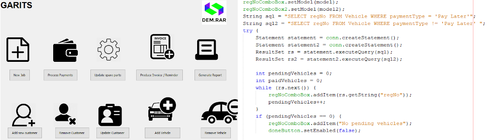

The Garage IT System (GARITS)
The Garage IT System is a team project that I contributed to along with 5 other team members. The system's main objective was to automate a paper based garage franchise. GARITS keeps records of customers and their vehicles. It sends reminders to customers whose vehicles are due for MoT test in the following week. When a vehicle is booked in for servicing, GARITS generates a job sheet for the mechanic, describing the work to be done. When the job is completed, the time spent and the prices of the spare parts fitted are added up and an invoice is available to the customer. The system prints reminders posted to all customers whose invoices have not been paid for some time. Each Quick Fix Fitters (the fictional client) staff member would be able to log in with their respective login details and perform their responsibilities efficiently. Some of these responsibilities involve creating new Staff Accounts (carried out by the Administrator only), Backing up and Restoring the system, adding new Customers to the Database, adding/removing/updating Customers' vehicles, booking MoTs, printing and sending Invoices, Reminders...